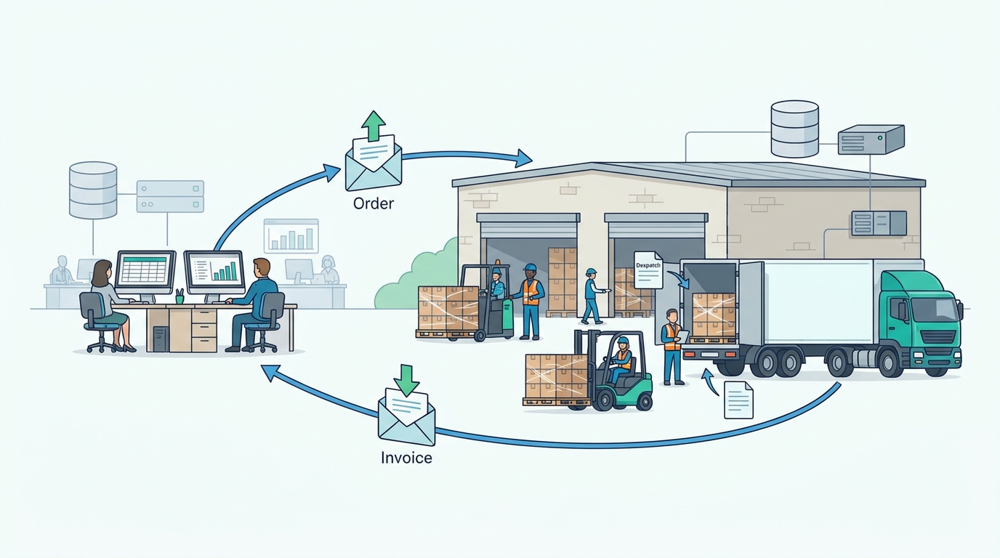

Part IX — JOURNEYS: One Order, End to End
Journey 3: A Chain Reorders by EDI, From Order to Invoice
AI-assisted: researched and written with Claude Code, images generated with the Gemini API. How this works

Part IX — JOURNEYS: One Order, End to End
AI-assisted: researched and written with Claude Code, images generated with the Gemini API. How this works
